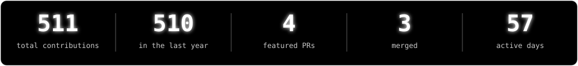
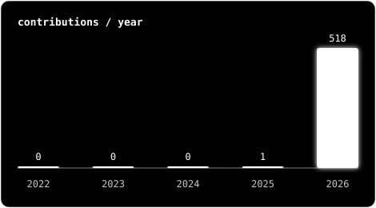
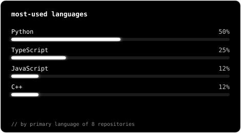

YATHARTH SONI
> Open Source Contributor
Khanan Suraksha & CF Ally Builder
$❯ cat about.md
I’m a Computer Science student who enjoys solving problems, building software, and learning by contributing to real-world codebases.
- [+]Improving my Data Structures & Algorithms and software engineering skills
- [+]Interested in web development, backend systems, and AI/ML
- [+]Learning open source through issues, pull requests, reviews, tests, and docs
- [+]Approach: build consistently, learn from reviews, and keep improving
$❯ git log ./contributions

LIVE · contribution monitorconnecting…


$❯ cat focus.txt
- [+]Practicing data structures & algorithms (DSA)
- [+]Solving problems consistently and learning patterns
- [+]Building full-stack projects
- [+]Improving tests, documentation and maintainability
- [+]Learning from reviews and contributing upstream
$
textterminal specification
[EOF] ─── guest@yatharth2soni:~$ logout ─── Connection to terminal closed.